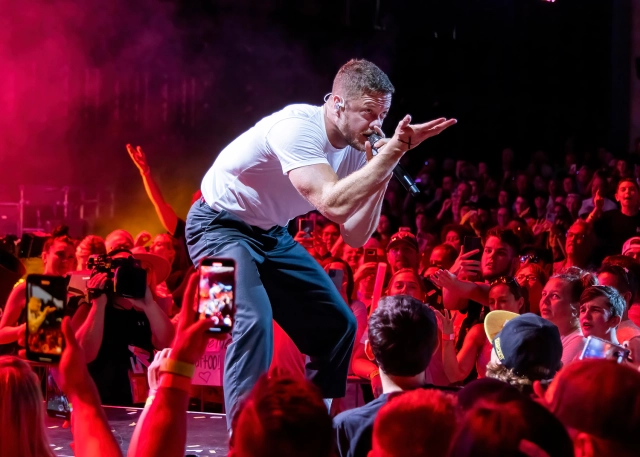

Imagine Dragons (произн. имэ́джин дрэ́гонс, дословно с англ. «Воображаемые Драконы») — американская поп-рок-группа, образованная в 2008 году в городе Лас-Вегас, США. Стали известны после выпуска дебютного студийного альбома Night Visions в сентябре 2012 года. Американский журнал Billboard назвал их самыми яркими новыми звёздами 2013 года и самой большой группой 2017 года, а журнал Rolling Stone назвал их сингл «Radioactive» самым большим рок-хитом года.